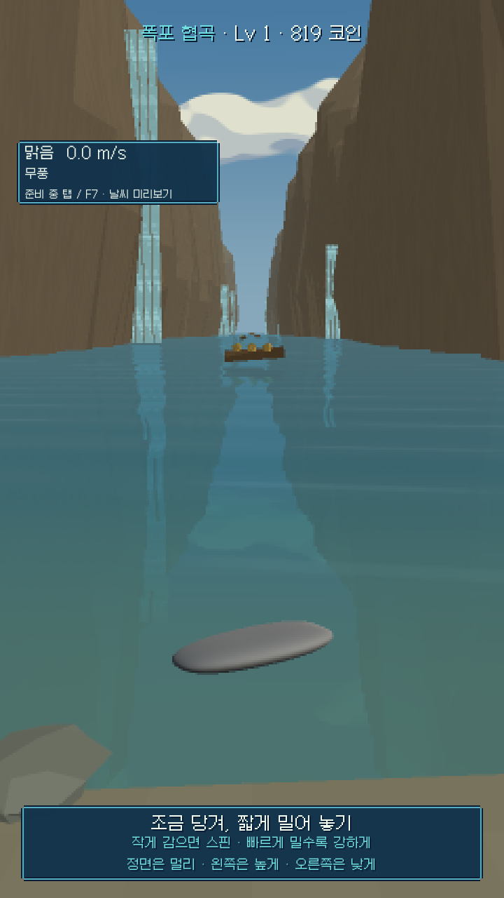

개발 중 · 공개 테스트
SKIPTIDE
강변에서 시작하는 물수제비.
돌을 고르고, 강화하고, 새로운 물길로.
v1.1234.3 MBAndroid APK
Android 다운로드최신 버전을 확인하고 있습니다.
Android 8.0 이상 · ARM64 · 세로 화면
iPhone에서는 설치할 수 없습니다.
이 주소를 저장해두세요.
새 버전도 이 페이지에서 받을 수 있습니다.

이번 업데이트
자세히 보기 ↗- 초반 스탯 구매 비용 감소·투척력 강화 폭 증가
- 갈대 여울 160m 해금·초보 학습 봇 10~15분 도달
- 과거 투척 기록을 분리 보관해 장기 저장 지연 개선
- 중복 저장 감소·기존 성장과 기록 유지
- 입력 판정·스핀 인식·수면 접촉 공식 유지
설치 안내
- 01
폰에서 APK를 다운로드하고 파일을 여세요.
- 02
설치가 차단되면 안내에 따라 사용 중인 브라우저의 ‘이 출처 허용’을 켜세요. 기기에 따라 이름이 다를 수 있습니다.
- 03
기존 앱 위에 업데이트 설치하세요. 앱을 삭제하거나 데이터를 지우면 저장된 진행도와 기록을 잃을 수 있습니다.
조작 기록 자동 수집 · 선택 사항
v1.5부터 앱에서 한 번 동의하면 투척 후 조작 기록을 자동 전송합니다. 동의는 다음 실행과 업데이트에서도 유지되며, 거절해도 플레이할 수 있습니다. 기록 → 자동 수집 끄기로 중지하면 미전송 기록도 삭제됩니다.
수집 항목은 게임 안의 손가락 이동, 힘·각도·스핀, 돌·강화·날씨, 투척 결과, 앱 버전·해상도·기록 시각과 무작위 테스트 ID입니다. 이름·연락처·광고 ID·화면 녹화는 수집하지 않습니다.
로그는 개발자의 비공개 Cloudflare 저장소에 전송하며 이 웹사이트에는 공개하지 않습니다. Wi-Fi와 모바일 데이터를 사용합니다. 폰에서는 최대 7일·100건·16MB를 보관하고, 서버 기록은 14일을 기준으로 매시간 정리합니다. 용량 한도에 도달하면 일부 기록이 누락될 수 있습니다. Cloudflare는 연결에 필요한 네트워크 정보를 처리하며, 앱 수집 DB에는 IP 주소를 저장하지 않습니다.
문제가 생긴 투척 번호와 기록 화면의 테스트 ID를 개발 대화에 알려주세요. 이미 전송한 기록의 삭제 요청에도 같은 ID를 사용합니다. 삭제 후 서비스 제공자의 복구용 백업은 해당 서비스의 보관 정책을 따릅니다. 수동 조작 기록 공유 기능도 사용할 수 있습니다.